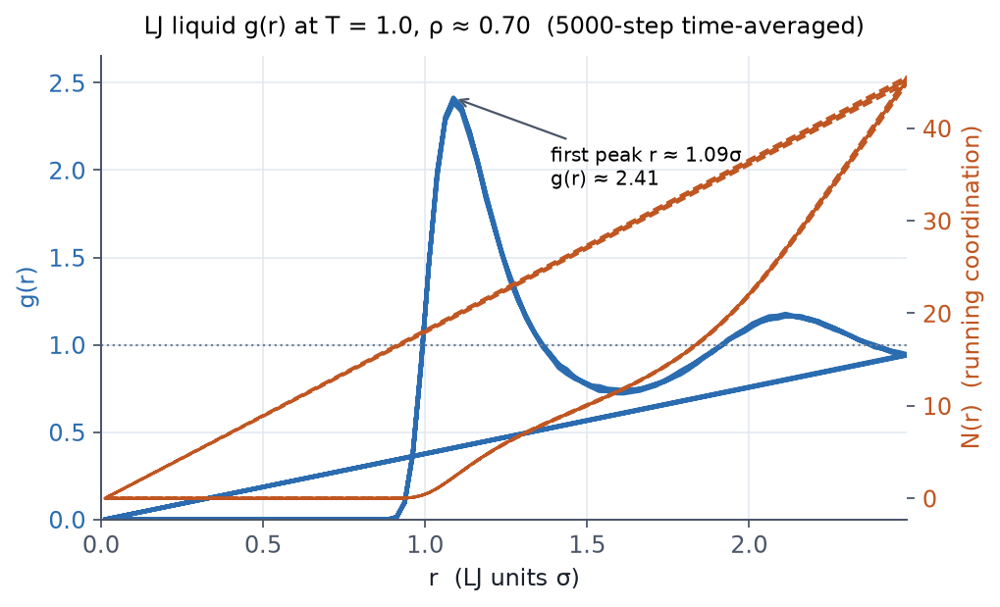
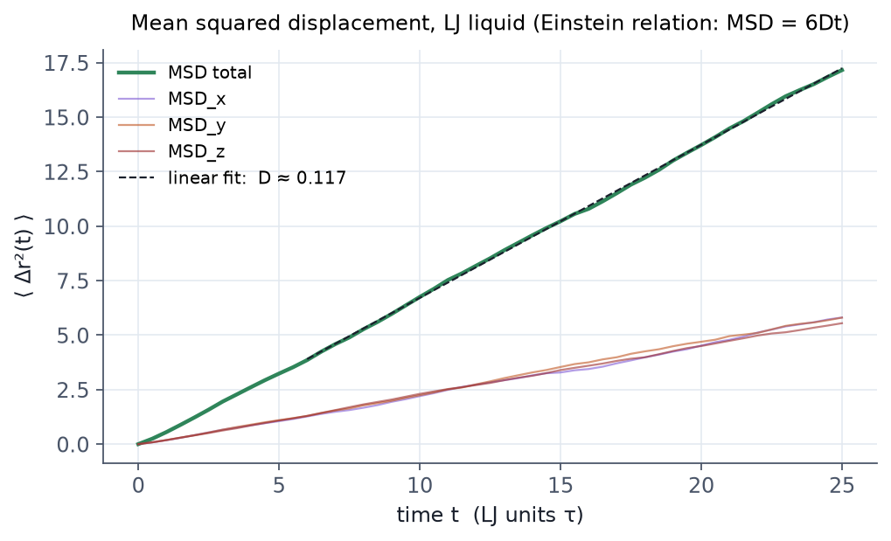

이 페이지에서 다룹니다
NOTE 31-07-00 · 출력과 분석
1. 일반 사항
A. 목적
- 이 노트는 LAMMPS가 내보내는 결과의 종류와 각 출력 명령의 설정을 다룬다.
- 이 노트는 compute 결과를 파일로 꺼내 g(r)와 MSD를 얻는 과정을 확인한다.
B. 적용 범위
- LAMMPS의 출력은 대략 다음과 같이 나눌 수 있다.
| 결과 | 명령 | 파일 |
|---|---|---|
| 열역학 수치 (화면/log) | thermo, thermo_style |
log.lammps |
| 좌표/속도 트라젝토리 | dump |
*.lammpstrj, *.xyz, *.dcd |
| 사용자 정의 계산값 | compute + fix ave/* |
별도 파일 |
| 재시작 파일 | restart |
*.restart |
| 그 외 진단 출력 | print, fix print |
임의 파일 |
- 시각화·분석은 LAMMPS 밖의 후처리 도구가 맡는다(2.C).
C. 결과 요약
- compute 결과는 그 자체로는 어디에도 저장되지 않는다.
thermo_style이나fix ave/time으로 꺼내야 한다. - LJ 액체(NPT, T = 1.0, P = 0.5)의 g(r) 첫 피크는 r ≈ 1.09 σ 에서 g(r) ≈ 2.41 이다(4.A).
- 같은 실행의 MSD 로부터 자기확산계수 D ≈ 0.117 (LJ 단위) 을 얻는다(4.B).
2. 준비 정보
A. 필요한 개념
- 입력 스크립트의 4단계 구조(NOTE 31-02-00).
- fix 와 run 으로 시뮬레이션을 진행하는 방법(NOTE 31-06-00).
- 온도, 압력, 에너지 같은 열역학 출력량의 의미.
B. 참조 자료
| 참조 | 제목 |
|---|---|
| 6장 (셋업과 실행) | LJ NPT production 5000 step 실행 |
| 예제 E2 — LJ 5단계 | 4.A, 4.B 의 전체 입력과 실행 절차 |
C. 사용 프로그램
- LAMMPS는 트라젝토리를 남기는 데까지만 하고, 시각화·분석은 외부 도구에 맡긴다.
- 자주 쓰는 도구는 다음과 같다.
| 도구 | 강점 |
|---|---|
| OVITO | 결정 구조 분석, 결함 식별, 가벼운 GUI |
| VMD | 분자 시각화의 표준. CHARMM/AMBER와 호환 |
| Ovito Python / MDAnalysis / MDTraj | Python에서 trajectory 분석 |
| PyLammps | Python 안에서 LAMMPS를 직접 호출 |
| ParaView | 대용량 mesh/필드 시각화 |
참고
대부분의 도구는 dump custom ... id type x y z 나 xyz/dcd 출력을 바로 읽는다.
D. 관련 파일
| 항목 | 용도 |
|---|---|
rdf.dat |
4.A 의 g(r) 출력 |
msd.dat |
4.B 의 MSD 출력 |
assets/images/lj-rdf.png, assets/images/lj-msd.png |
4.A, 4.B 의 그림 |
3. 절차
A. thermo: 화면과 log에 찍히는 열역학
thermo N으로 N 스텝마다 한 줄을 출력한다.thermo_style로 표시할 열을 정한다.
thermo 100
thermo_style custom step temp pe ke etotal press density
- 기본 컬럼은
step temp epair emol etotal press정도이다.custom에서는 아래 컬럼들을 자유롭게 섞는다.
| 컬럼 | 의미 |
|---|---|
step |
스텝 번호 |
temp |
온도 |
pe, ke, etotal |
포텐셜·운동·총 에너지 |
enthalpy |
enthalpy |
press, vol, density |
압력, 부피, 밀도 |
pxx pyy pzz |
응력 텐서 대각 |
cpu, cpuremain |
누적 CPU 시간, 남은 추정 시간 |
c_<computeID> |
compute 결과 |
v_<variableID> |
변수 값 |
- 평형화를 지켜보거나 성능을 점검할 때는
thermo출력부터 본다.
B. dump: 좌표·속도 트라젝토리
- 트라젝토리 출력을 설정한다.
dump 1 all custom 1000 traj.lammpstrj id type x y z
- 각 인자의 의미를 확인한다.
1: dump의 ID (취소할 때undump 1)all: 출력 대상 그룹custom: dump style1000: 매 1000 steptraj.lammpstrj: 파일명id type x y z: 출력 컬럼
- 용도에 맞는 dump style을 아래 표에서 고른다.
| dump style | 특징 |
|---|---|
atom |
LAMMPS 기본 텍스트, 가벼움 |
custom |
컬럼을 자유롭게 선택. 가장 흔히 사용 |
xyz |
단순 XYZ 포맷 (VMD 즉시 열림) |
dcd |
CHARMM/NAMD 호환 바이너리 |
netcdf |
AMBER 호환 바이너리 (대용량 효율적) |
image, movie |
시뮬레이션 도중 png/avi 생성 (디버그용) |
주의
후처리 도구가 원자를 추적하려면 sort id 가 꼭 필요하다.
dump_modify로 설정을 더한다.
dump_modify 1 sort id # 원자 ID 순으로 정렬
dump_modify 1 element Cu C O H # type → 원소 매핑 (OVITO에서 색깔 자동)
C. compute: 시뮬레이션 중 계산
- 시뮬레이션 도중에 계산할 양을
compute로 정의한다.
compute myT all temp
compute myKE all ke
compute myPE all pe
compute myRDF all rdf 100 1 1 1 2
compute myMSD all msd
- 필요한 양에 맞는 compute style을 아래 표에서 고른다.
| compute style | 계산하는 양 |
|---|---|
temp, temp/com, temp/region |
온도 (집단별·영역별) |
pe, ke, pe/atom |
에너지 |
pressure |
압력 |
rdf |
동경 분포 함수 g(r) |
msd |
평균 제곱 변위 |
coord/atom |
원자별 배위수 |
cna/atom, centro/atom |
결정 구조 분석 |
chunk/atom, density/atom |
공간 영역별 평균 |
stress/atom |
원자별 응력 |
주의 compute 결과는 그 자체로는 어디에도 저장되지 않는다. 다음 단계로 꺼내야 값을 볼 수 있다.
thermo_style custom ... c_myT나 3.D 의fix ave/time으로 compute 결과를 꺼낸다.
D. fix ave/*: 시간 평균을 자동으로
- 시간 평균 출력을 설정한다.
fix 1 all ave/time 10 100 1000 c_myT c_myPE file thermo_ave.txt
- 위 명령은 "1000 스텝마다, 직전 100개 sample을 10 스텝 간격으로 모아 평균하라"는 뜻이다.
Nevery(10): sampling 간격Nrepeat(100): 평균에 쓸 sample 개수Nfreq(1000): 출력 주기
- 원자별 양의 시간 평균에는
fix ave/atom을 쓴다. - 공간 chunk별 시간 평균에는
fix ave/chunk를 쓴다.
# 밀도 프로파일 (z축 슬라이스)
compute cc all chunk/atom bin/1d z 0.0 1.0 units box
fix dens all ave/chunk 10 100 1000 cc density/mass file dens.txt
참고
RDF, 밀도 프로파일, 응력 분포 같은 분석은 대부분 fix ave/atom 과 fix ave/chunk 위에서 이루어진다.
E. restart: 중간 저장
- 중간 저장 주기를 설정한다.
restart 50000 sim.restart
- 50000 스텝마다
sim.restart.50000같은 파일이 남는지 확인한다. - 다음 실행은 아래 명령으로 이어서 시작한다.
read_restart sim.restart.50000
- 오래 걸리는 시뮬레이션이라면 restart를 늘 켜 둔다.
F. 분석을 위한 출력 설정 점검
dump_modify sort id를 켜 둔다. 후처리 도구에서 원자를 추적하기 쉽다.- dump_modify에 element 매핑(
element Cu C O H식)을 넣는다. OVITO/VMD가 원자 색을 알아서 입힌다. - thermo와 dump의 주기는 따로 둔다.
- thermo는 자주(
100) 찍는다. - dump는 드물게(
1000–10000) 찍는다. 디스크를 아끼면서도 진단에 필요한 정보는 남는다.
- thermo는 자주(
경고 평형화 단계의 값이 평균에 섞이면 결과가 왜곡된다.
- fix ave/time은 평형화가 끝난 뒤에 건다.
unfix후 새로 등록하거나start옵션을 쓴다. - restart는 항상 켜 둔다. 시뮬레이션이 4시간을 넘으면 사실상 필수다.
4. 시험 및 검사
참고 아래 g(r)·MSD는 예제 E2 — LJ 5단계 의 production 단계에서 나온 출력이다. 전체 입력과 실행 절차는 그 페이지에 있다.
A. g(r) (동경 분포 함수)
- 6장에서 돌린 LJ NPT production 5000 step 에 다음 두 줄을 더한다.
compute rdf1 all rdf 100 # 100 bin 까지의 g(r)
fix rdfavg all ave/time 10 100 1000 c_rdf1[*] file rdf.dat mode vector
- 결과 파일
rdf.dat를 그린다. LJ 액체의 전형적인 동경 분포 함수가 나와야 한다. - 첫 피크가 r ≈ 1.09 σ 에서 g(r) ≈ 2.41 인지 확인한다.
- 두 번째 피크가 ~ 2.1 σ 부근에 보이는지 확인한다. 이는 액체 특유의 진동 구조다.

B. MSD 와 자기확산계수
- 같은 production 단계에서 MSD 도 함께 계산한다.
compute msd1 all msd
fix msdavg all ave/time 1 1 100 c_msd1[1] c_msd1[2] c_msd1[3] c_msd1[4] file msd.dat
- ⟨Δr²(t)⟩ 가 시간에 따라 선형으로 늘어나는지 확인한다. 이는 정상 확산(normal diffusion) 거동이다.
- Einstein 관계 ⟨Δr²(t)⟩ = 6 D t 에 직선을 맞춘다. 그 기울기로 자기확산계수 D 를 추정한다.
- 이 5000-step 데이터로 fit 한 값이 D ≈ 0.117 (LJ 단위) 인지 확인한다.

주의
compute 결과는 fix ave/time 으로 꺼낸다. 위 두 예제는 모두 compute 로 정의하고 fix ave/time 으로 파일에 쓰는 방식이다. compute 는 한 스텝의 값만 들고 있으므로, thermo 컬럼(c_msd1[4])으로 직접 꺼내거나 fix ave/time 으로 시간 평균을 파일에 쓰는 게 보통이다. rdf 같은 vector 출력에는 mode vector 옵션을 빠뜨리지 않는다.